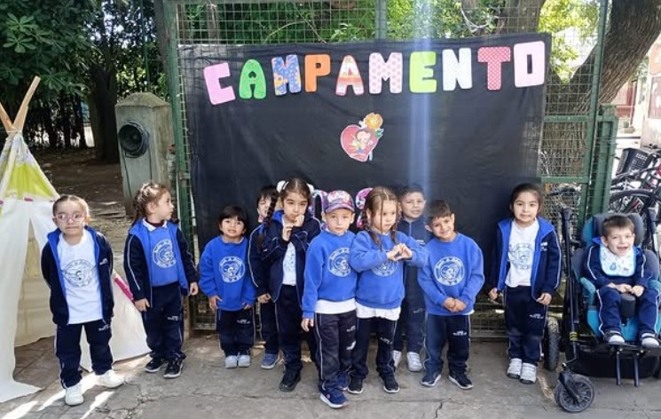
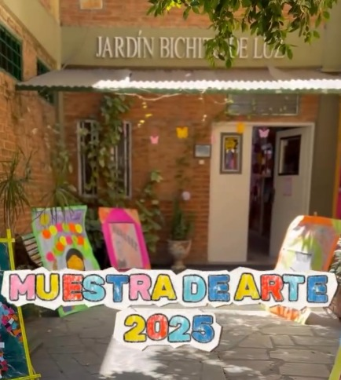
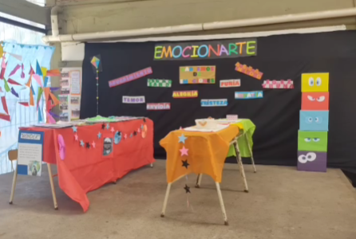

JUEGO
Exploración
Aprendizaje creativo.

En Bichito de Luz, cada niño crece en libertad, rodeado de afecto y propuestas pedagógicas innovadoras.

Aprendizaje creativo.

Manos a la obra.

Melodías y alegría.

Cuerpo en movimiento.
El juego como eje central del desarrollo cognitivo y social.
Un ambiente seguro donde la contención emocional es nuestra prioridad.
Fomentamos la expresión artística en todas sus formas desde temprana edad.
"Mi hijo va súper feliz, los proyectos son hermosos y las docentes excelentes."